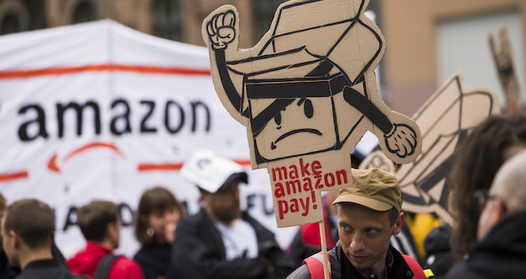
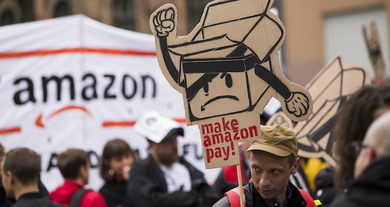

Workers of the World
In a tangled global economy, how can international labor solidarity go beyond symbolic support?
In a tangled global economy, how can international labor solidarity go beyond symbolic support?

During last November’s Black Friday and Cyber Monday shopping bonanza, the hashtag #MakeAmazonPay started to percolate on Twitter. Activists circulated photographs of small rallies around the world, from a dockworkers’ banner drop in Sao Paolo to a demonstration in Berlin led by tech and warehouse workers opposing “Amazon’s dystopic surveillance practices.” A broad coalition of unions, environmental groups, and other allied organizations coordinated a day of action to condemn the e-tailer’s notorious pressure-cooker working conditions and demand an end to its systematic suppression of union organizing.
The scattered nature of these protests reflected how effective Amazon’s business model has been in atomizing its workforce. The German union ver.di reported a one-time work stoppage of about 2,500 workers across three cities. In Italy, the union SI Cobas posted a video of a one-day blockade of a fulfillment center in Piacenza, with “more than a thousand workers” condemning what the union called an expanding “precarious work model” that “creates a precedent for the whole of Italy, laying the foundations for the ruin of an entire generation of workers.” Yet elsewhere, Black Friday passed with no significant disruptions to Amazon’s business, which broke a record for sales that weekend. By the end of the year, the company had grown its workforce to 1.6 million people, about one-third outside the United States, an increase of 24 percent from the previous year.
The campaign was an expression of solidarity by a global community of sorts, but there were too few workers, too far from each other, to actually jam up Amazon’s gargantuan supply chain. In an increasingly integrated global economy, a huge employer like Amazon can forge a collective identity for workers across the world, but that collective experience does not easily translate into global organizing under the banner of international solidarity. For the last few decades, even as other social justice movements have become more oriented toward transnationalism and global politics, international labor solidarity has often been practiced only symbolically, reflecting the paradox of a global economy in which products and services flow seamlessly over borders that divide and ensnare workers.
There is a much longer history of international cooperation among labor organizations—often with the aim of fostering independent democratic unions and using international legal channels to improve working conditions. In International Solidarity in Action, Robin Alexander, former international affairs director with the United Electrical, Radio and Machine Workers of America (UE), explores one part of this story: the cross-border solidarity work led by UE and its Mexican counterpart, the Authentic Workers Front (FAT), at a time when the U.S., Mexican, and Canadian economies were deregulating and integrating under the North American Free Trade Agreement. Since the 1990s, UE and FAT have partnered to campaign in defense of Mexican workers fired for organizing at multinational firms or for challenging the dominance of company-controlled unions.
UE wasn’t the only U.S. organization establishing relationships with unions in Mexico. In the early 1990s, the Communications Workers of America formed a similar alliance with the Mexican telecom workers’ union, Sindicato de Telefonistas de la República Mexicana, to support independent unions that were challenging incumbent employer-friendly unions. And union-backed organizations such as the Canada-based Maquila Solidarity Network and the U.S. Labor Education in the Americas Project mobilized transnational campaigns to demand decent working conditions and the right to form independent unions in Mexico’s export manufacturing sector.
UE used the complaint process established under the labor-side agreement of NAFTA, known as the North American Agreement on Labor Cooperation, to bring international scrutiny to union repression in Mexico. Though the complaints were largely toothless, and investigations often took years, Alexander argues that UE’s work—in tandem with other labor and rights organizations—helped build momentum for reforms adopted in the renegotiated version of NAFTA, the USMCA, which significantly strengthened freedom of association in Mexican firms.
Alexander also highlights UE’s worker-to-worker exchanges. U.S. and Mexican workers made cross-border visits, in which UE members learned about grassroots labor struggles in their respective countries. Through these ground-level collaborations, workers from each country “walked picket lines, attended meetings, assisted with organizing drives, taught high school and university classes, and participated in radio and television programs in an effort to share information, learn about each other, and take the information back to their locals and communities.”
The exchanges enhanced UE workers’ political perspectives, not only on the working conditions on the other side of the border but also on the social dynamics that drive labor migration to the United States—a process that is often seen as a threat to U.S. workers rather than a consequence of a shared struggle for economic survival and dignity.
Former UE President Peter Knowlton argued that “ONLY through a serious, concerted member-to-member international solidarity effort will U.S. workers understand that their boss at home is the same boss of workers abroad and then take the next step to link arms with these workers in an active international expression that ‘an injury to one IS an injury to all.’”
Nonetheless, Alexander acknowledges that international solidarity can only go so far to facilitate the empowerment of workers in another country. Real solidarity movements require sustained relationships between rank-and-file members, which may be especially difficult to maintain when labor organizations struggle with repression or lack the resources to invest in developing long-term international connections.
“Over time,” she writes, “I also came to realize that conditions do not always exist for international solidarity to be effective and that our touchstone must be whether workers are in struggle or under attack and whether there is a viable organizing strategy. Legal or other strategies may be critically important, but they are not a substitute for the organized power of workers.”
International solidarity activism is also constrained by the structural barriers of an economic order built on systemic corporate exploitation of inequalities in working conditions across regions. The International Labour Organization has virtually no leverage to impose or enforce international standards directly on member states. The labor provisions in U.S. trade agreements are notoriously anemic, and enforcement by signatory governments has been weak to nonexistent, even though the same agreements provide businesses with substantive legal mechanisms for adjudicating disputes over corporate trade rules.
In addition, the ideal of international solidarity is difficult to put into practice in a country like China, where geopolitical tensions, a lack of independent trade unions, and an authoritarian government militate against any meaningful coalition-building between workers and outside labor groups. Meanwhile, the mainstream U.S. labor movement has generally addressed China through a protectionist critique of U.S.-China trade policy. While unions no longer explicitly traffic in anti-Asian rhetoric as they did during the 1980s, at the peak of the backlash against Japanese automakers, organizations like the AFL-CIO tend to treat China as an economic rival whose ascent comes at the expense of American jobs, instead of a nation of workers who are, like their U.S. counterparts, struggling to survive in a grotesquely unequal society.
The kind of worker-to-worker collaboration that the UE and FAT organized would be nearly impossible in China, given that the country’s official unions are government controlled, and the few grassroots labor-rights centers that advocated for workers (sometimes with international NGO support) have been suppressed or dismantled in recent years.
However, there have been rare instances in which Chinese workers have called for international intervention in labor disputes. In 2017, temporary workers at a Volkswagen factory in Changchun called on Volkswagen works councils in Europe to intervene in response to allegations of labor violations at the Chinese facility, including the arrest of a worker-leader. According to an analysis on Gongchao.org, leaders of German and European works councils replied with a curt note, choosing to simply encourage the aggrieved Chinese workers to take their case to their management and local authorities. The exasperated workers interpreted the message to mean, “The Germans don’t care. So it’s on us to fight!”
These inherent challenges are part of the reason that transnational activism on labor issues is often led not by unions but by NGOs, like United Students Against Sweatshops, the International Labor Rights Forum, and the Worker Rights Consortium. These broad-based watchdog groups mobilize consumers, media, and other civil society actors to campaign against labor abuses in the Global South, from child labor on West African cocoa farms to union suppression at Bangladesh’s garment factories. The Solidarity Center, whose work grew out of the operations of the AFL-CIO’s international arm during the Cold War, provides training, legal aid, and other technical assistance to unions in dozens of countries (while working to distance itself from its unseemly historic ties to the Central Intelligence Agency’s attacks on left-wing unions).
These organizations depart from the grassroots model of international solidarity embraced by UE, which is rooted in strategic alliances between worker-led, worker-funded organizations. But the ethos of labor solidarity still informs their work. One recent example is the Occupational Health and Safety Initiative, a grassroots education network founded by U.S.-based workplace safety experts a few years after the Rana Plaza disaster—a horrific building collapse that killed more than 1,100 Bangladeshi workers. Since 2016, the network has collaborated with labor advocates, women’s groups, and public health organizations to raise safety standards in Bangladeshi garment factories by conducting health and safety trainings for thousands of community members. It has also established a local network to expand community-based education on workplace safety, including protection from gender-based violence and organizing worker-led safety committees.
The program was a relatively tiny intervention, reaching only a sliver of Bangladesh’s more than 4 million, mostly female, garment workers. But it gave those it did reach a form of material support that the international protests in the wake of Rana Plaza could not deliver: a comprehensive understanding of what they could do to protect themselves and their coworkers, and how that connected to a global movement for safe workplaces.
International labor solidarity projects have grown more complicated in an era of globalization and digital communication. How can unions translate a flurry of one-day protests against a tech giant into a sustained international organizing drive? What is the value of international cooperation among labor groups in the absence of enforceable international labor standards? How can international solidarity go beyond symbolic support and actually improve the lives of workers in other countries, or inform the demands unions make of multinational employers and lawmakers, or work through migrant-worker diaspora networks? In the United States, the idea of international solidarity helps unions raise transnational class consciousness and empathy in their ranks, but it can only mount a meaningful challenge to global capitalism if it galvanizes a vision for organizing that enables workers to shape the course of globalization itself.